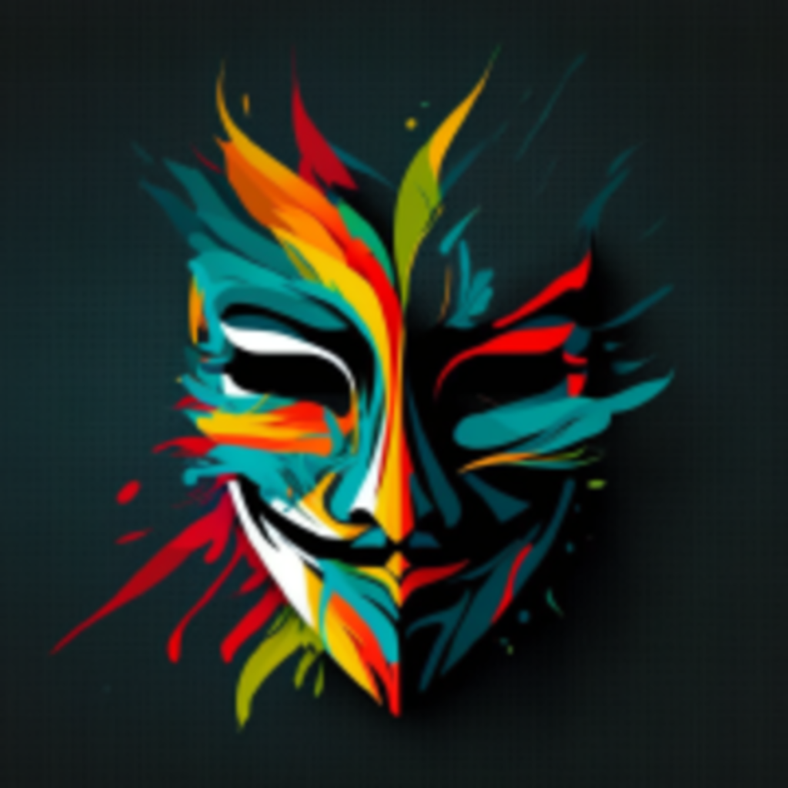
Полный набор иконок приложения NOX под все целевые платформы, сгенерированный из брендовой маски-логотипа. Структура папок повторяет Flutter-проект — файлы кладутся прямо на место.
Про разрешение. Единственный исходник — растр 200×200 (assets/logo.png).
Размеры до 256 px чёткие; 512 и 1024 px — апскейл и потому мягковатые. Перед публикацией в сторы
пересоберите из hi-res или финального вектора (пока в pending по бренд-спеке). Весь конвейер и манифесты уже готовы к этому моменту.
Какие форматы нужны — кратко
- Набор в AppIcon.appiconset
- Непрозрачные, квадрат
- 40–180 + 1024 marketing
- Скругление делает ОС
- Adaptive: XML + foreground
- + legacy square / round
- mdpi → xxxhdpi
- 512 для Play Store
- Один мульти-размерный файл
- 16·24·32·48·64·128·256
- → runner/resources
- .icns (готовый)
- + appiconset для Flutter
- Скруглён + поля
- 16 → 1024 (+@2x)
- hicolor темы
- 16 → 512
- + nox.desktop
iOS
AppIcon.appiconset · 12 PNG + Contents.jsonНепрозрачные квадратные PNG; систему скругляет сама — поэтому исходники full-bleed.
Подставляется в ios/Runner/Assets.xcassets/. Ниже — превью со скруглением iOS.
iPhone @3x
Spotlight
Settings
iPad @2x
App Store · square
Android
adaptive · legacy · Play StoreAdaptive-иконка (API 26+): foreground поверх цвета #151919, маску задаёт лаунчер
(круг / squircle / др.). Старые устройства берут legacy ic_launcher.png / _round.png.
Арт держится в safe-zone, поэтому не обрезается ни одной маской.
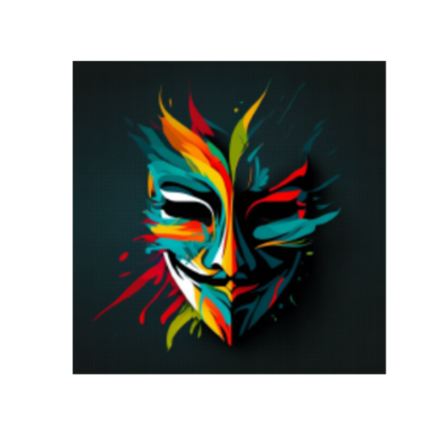
Adaptiveкруглая маска
squircle
legacy round
legacy square
Play Store
Windows
app_icon.ico · 7 размеров в одном файлеОдин .ico с размерами 16–256 px. Кладётся как
windows/runner/resources/app_icon.ico. Так выглядит на панели задач и в проводнике:
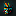
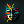
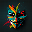
macOS
nox.icns · nox.iconset · AppIcon.appiconsetФорма по сетке Apple: скруглённый прямоугольник (≈22% радиуса) с полями ~9% — чтобы смотрелось
«по-маковски» в Dock. Готовый nox.icns + AppIcon.appiconset для Flutter/Xcode.
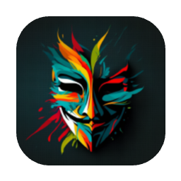
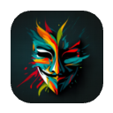
128 px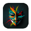
32 px @2x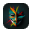
16 px @2xLinux
hicolor PNG · nox.desktopPNG в каталогах темы hicolor/<size>/apps/nox.png + nox.desktop
(поле Icon=nox резолвится по теме). Так рисуется в меню приложений / доке:
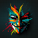
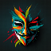
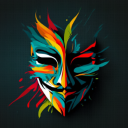
16 · 24 · 32 · 48 · 64 · 128 · 256 · 512